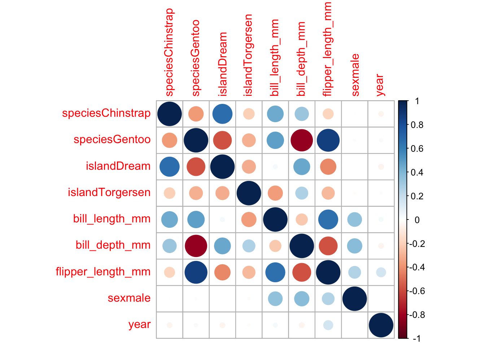
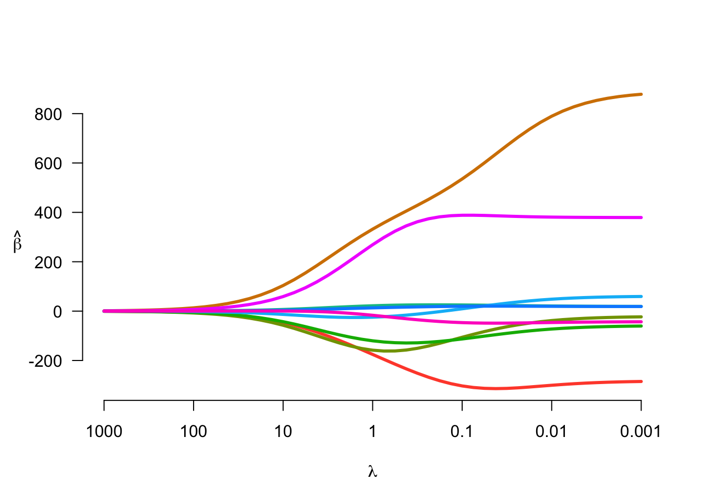

Chapter 9 The basics: t-tests, ANOVA, and linear regression
The most basic statistical analyses for a GRA to use are t-tests, analysis of variance, and linear regression. Here are some tips and references for getting started using any of these tools:
9.1 t-tests & ANOVA
Many t-test and ANOVA results can be implemented by the same functions I’ve suggested for creating summary tables.
9.2 Linear regression
9.2.1 Assumptions/diagnostics
As the regression diagnostics page at Boston University explains, there are 4 key assumptions in linear regression:
Linearity: the data \(X\) are in a linear relationship with the mean of the outcome \(\hat Y\)
Homoskedasticity: The variance of the residual \(\sigma^2\) is the same for all observations of \(X\).
Independence: For all observations \(i\) and \(j\), \(i \perp j\).
Normality: The residuals \(\textbf{r} \equiv Y - X\beta\) are distributed normally.
When using a linear model, here are the diagnostics you should check:
Check the linearity assumption: make a plot of the residuals \(\textbf{r}\) versus the fitted values \(\hat{\mathbf{Y}}\). If this assumption holds, you should see a horizontal line without a distinct pattern. Patterns like a cone-shape or a curve are red flags.
Check the normality assumption: Make a QQ plot of the residuals using
qqnormandqqline. If the normality assumption is reasonable, the points should fall on the diagonal line drawn byqqline. You could also make a histogram of the residuals and see if the histogram has a bell-curve shape. Note: plotting the observed outcomes \(Y\) is not the same as checking this assumption. The linearity assumption pertains to the residuals being bell-curve shaped, not the observed outcome values.Check the heteroskedasticity assumption: Plot the standardized residuals versus the fitted values (this is a scale-location plot). You want to see no pattern here; if you notice a curved or cone-shaped pattern, that’s a red flag.
Check for outliers and high leverage points: Cooks distance is a metric for identifying influential points. You can calculate this in
Rusingcooks.distance(), which is one of several functions provided in thestatspackage for assessing influence. See?influence.measuresfor details.It is a good idea to check for multicollinearity – to do this, you can start by estimating the variance inflation factor (VIF) values for each parameter in your model using the
viffunction from thecarpackage. Rule of thumb: if any VIF values are greater than 10, the degree of multicollinearity in your model is causing your estimates to suffer. To deal with highly correlated values, you can try any of the following:Where there are two or more variables that are measuring the same thing, narrow down the model to include just one of these variables.
Try ridge regression
9.2.2 Examples:
- This article on STHDA gives some examples of residual plots in
R.
9.2.3 R code tips
This extended example shows how I fit a model, check diagnostics, and deal with multicollinearity:
library(palmerpenguins) # example data 'penguins'
library(car) # has vif() function ## Loading required package: carDatalibrary(gtsummary) # to summarize model estimates
# fit a regression model
fit <- lm(body_mass_g ~ .,
data = penguins)
# examine results
fit |>
tbl_regression() |>
bold_labels()| Characteristic | Beta | 95% CI1 | p-value |
|---|---|---|---|
| species | |||
| Adelie | — | — | |
| Chinstrap | -283 | -457, -108 | 0.002 |
| Gentoo | 891 | 607, 1,175 | <0.001 |
| island | |||
| Biscoe | — | — | |
| Dream | -21 | -136, 94 | 0.7 |
| Torgersen | -59 | -178, 61 | 0.3 |
| bill_length_mm | 19 | 5.0, 33 | 0.008 |
| bill_depth_mm | 61 | 21, 100 | 0.003 |
| flipper_length_mm | 19 | 12, 25 | <0.001 |
| sex | |||
| female | — | — | |
| male | 379 | 284, 474 | <0.001 |
| year | -43 | -84, -1.6 | 0.042 |
| 1 CI = Confidence Interval | |||
# take note: some of these confidence intervals are ~super~ wide# check assumptions (this gives me 4 plots):
par(mfrow=c(2,2))
plot(fit) Notes from diagnostic plots:
- first plot checks linearity – looks good
- second plot checks normality – beautiful
- third plot checks heteroskedasticity - no evidence of an issue here
- 4th plot checks for outliers/leverage – looks like we do have a couple of outliers. Will proceed with caution…
# check for multicollinearity:
car::vif(fit) ## GVIF Df GVIF^(1/(2*Df))
## species 71.200285 2 2.904828
## island 3.762055 2 1.392696
## bill_length_mm 6.117069 1 2.473271
## bill_depth_mm 6.274341 1 2.504864
## flipper_length_mm 7.775036 1 2.788375
## sex 2.343434 1 1.530828
## year 1.172956 1 1.083031Note: Very high VIF for species. Flipper length also has a moderately high VIF
# visualize correlations:
library(corrplot) # Love this package ## corrplot 0.92 loaded# to assess correlations between variables, use the design matrix X:
X <- model.matrix(fit)[,-1]
corrplot(corr = cor(X)) 
Now we see the problem: there are notable correlations between species and several other variables. Suppose the research question involves comparing the species of penguins, e.g., “We aim to assess whether/how body mass (measured in grams) varies between penguins of three species: the Adelie, the Chinstrap, and the Gentoo.” In this kind of context, the bill length and flipper length variables are not directly related to the research question. Also, ‘island’ seems to be capturing the same information as ‘species.’ In this case, I would eliminate these redundant variables from the model and create a reduced fit:
fit_reduc <- lm(body_mass_g ~ species + sex + year,
data = penguins)
fit_reduc |>
tbl_regression() |>
bold_labels()| Characteristic | Beta | 95% CI1 | p-value |
|---|---|---|---|
| species | |||
| Adelie | — | — | |
| Chinstrap | 27 | -64, 119 | 0.6 |
| Gentoo | 1,378 | 1,301, 1,455 | <0.001 |
| sex | |||
| female | — | — | |
| male | 668 | 599, 736 | <0.001 |
| year | 3.6 | -39, 46 | 0.9 |
| 1 CI = Confidence Interval | |||
Notice that the revised model has a much more reasonable confidence interval for ‘species’, and the coefficient representing the impact of ‘Chinstrap’ species is no longer significant. However, using the AIC to assess model fit, we see that our reduced model does not fit our data as well as the model with all the coefficients:
# AIC: lower is better
AIC(fit); AIC(fit_reduc)## [1] 4724.97## [1] 4787.564A better approach may be using ridge regression:
library(hdrm) # for ridge() function ## Loading required package: glmnet## Loading required package: Matrix## Loaded glmnet 4.1-7## Loading required package: ncvreglibrary(knitr) # for kable() function
# fit model with lambda sequence
fit_ridge <- ridge(body_mass_g ~ .,
data = penguins)
# look at results
plot(fit_ridge)
# choose lambda that minimizes GCV
bestlam <- fit_ridge$lambda[which.min(fit_ridge$GCV)]
# re-fit model at best lambda
fit_ridge <- ridge(body_mass_g ~ .,
data = penguins,
lambda = bestlam)
# summarize results (no gtsummary function for this, so I build my own table)
res_ridge <- data.frame(OR = exp(coef(fit_ridge)),
exp(confint(fit_ridge)),
p = summary(fit_ridge)[,4] |> format.pval(digits=2,
eps=0.01))
kable(res_ridge)| OR | Lower | Upper | p | |
|---|---|---|---|---|
| (Intercept) | Inf | Inf | Inf | 2.2 |
| speciesChinstrap | 0.000000e+00 | 0.000000e+00 | 0.000000e+00 | <0.01 |
| speciesGentoo | Inf | 4.905289e+239 | Inf | 6.2 |
| islandDream | 0.000000e+00 | 0.000000e+00 | 8.031780e+33 | <0.01 |
| islandTorgersen | 0.000000e+00 | 0.000000e+00 | 8.515774e+20 | <0.01 |
| bill_length_mm | 7.620551e+08 | 1.178649e+03 | 4.927062e+14 | 3.0 |
| bill_depth_mm | 1.479218e+22 | 9.804621e+05 | 2.231687e+38 | 2.7 |
| flipper_length_mm | 2.275824e+08 | 6.806037e+05 | 7.609971e+10 | 6.5 |
| sexmale | 1.481501e+165 | 8.282918e+124 | 2.649845e+205 | 8.1 |
| year | 0.000000e+00 | 0.000000e+00 | 7.661000e-03 | <0.01 |